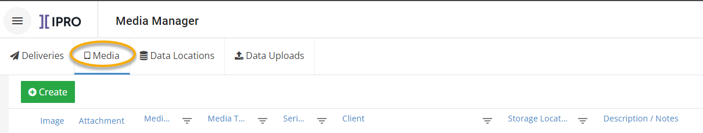
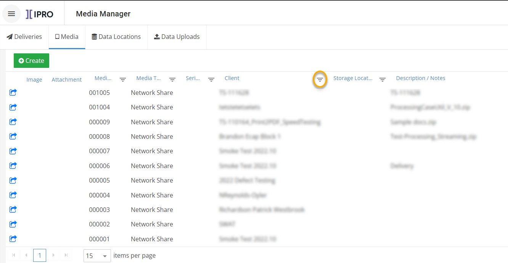
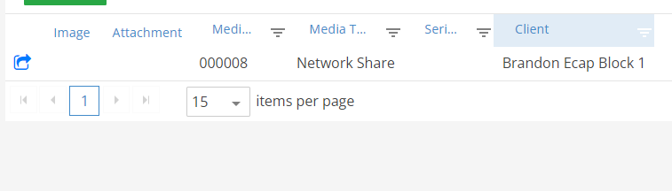
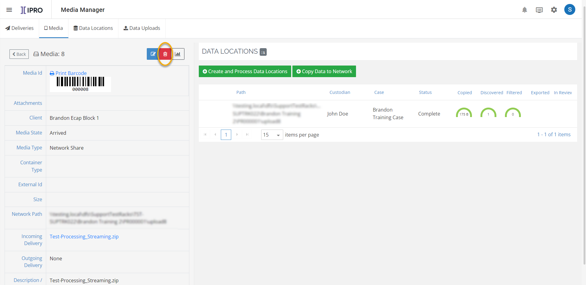

Warning: Before these items can be deleted in Case Management, you must delete any associated media in Media Manager and the associated export jobs in
Components in the
|
|
Warning: Before these items can be deleted in Case Management, you must delete any associated media in Media Manager and the associated export jobs in |
Before deleting a case or client, check whether there is any media in Media Manager associated with it, as this will also need to be deleted:
From the home page, click on Media Manager. Then click on the Media tab.

Click on the Filter button to the right of Clients. Enter in the name of the client you wish to delete.

All media associated with your client will be shown. Click on the box with an arrow to the left of the screen to go to the details page for that media entry.

Click on the red trash can icon in order to delete the media.

Before deleting a case or client, check whether there are any export jobs in
Launch
Expand the desired case folder.
Expand the export jobs subfolder.
Expand the desired export series.
Delete any existing export jobs one by one.
To delete items from the Case Management page:
Click Case Management
on the
Continue with the following steps as needed.
To delete a case:
Click
 corresponding
to the needed case and select Delete
Case.
corresponding
to the needed case and select Delete
Case.
Click OK in response to the confirmation message.
To delete a client:
Make sure all cases associated with the client have been deleted.
Click
 corresponding
to the needed client and click Delete
Client.
corresponding
to the needed client and click Delete
Client.
Click OK in response to the confirmation message.
To delete a managing client:
Make sure all clients associated with the managing client have been deleted.
Click
corresponding
to the needed managing client and click Delete
Managing Client.
Click OK in response to the confirmation message.
Notify other administrators and users of the changes.
Related Topics